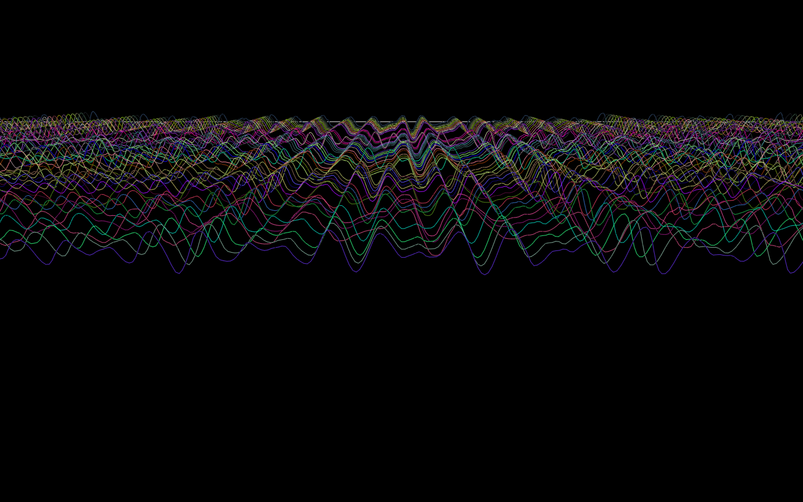
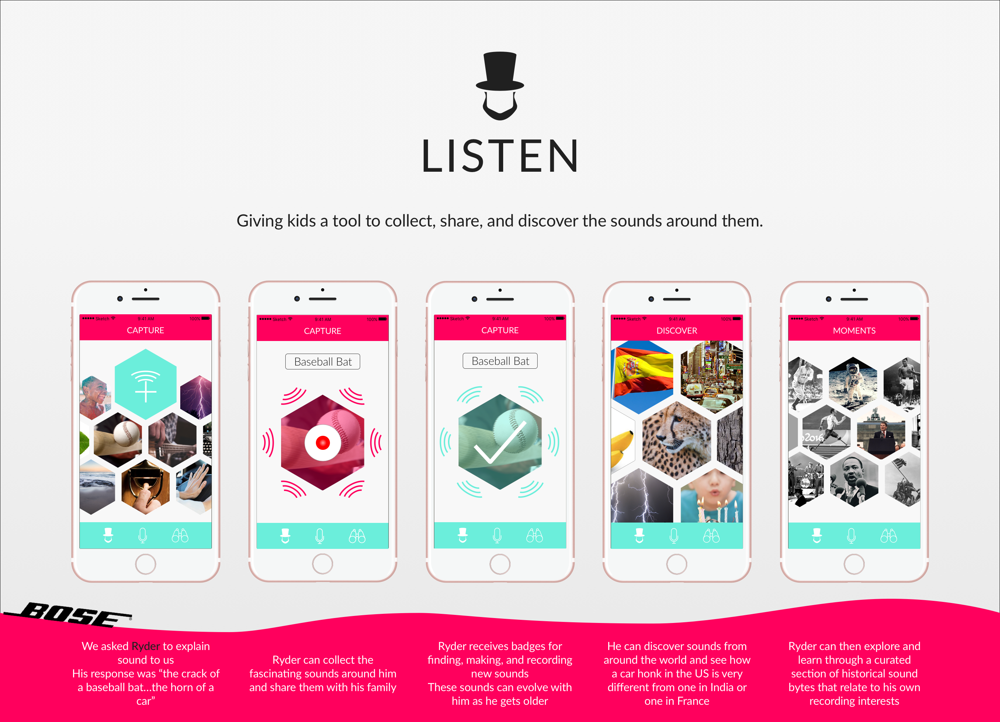
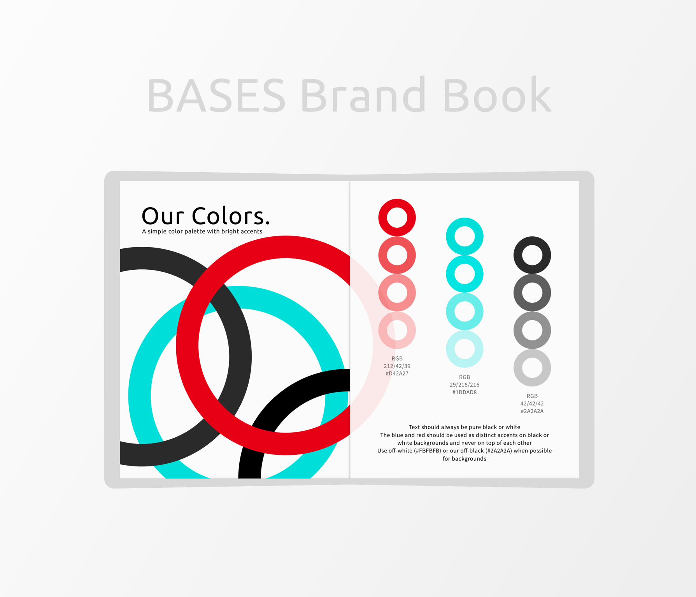
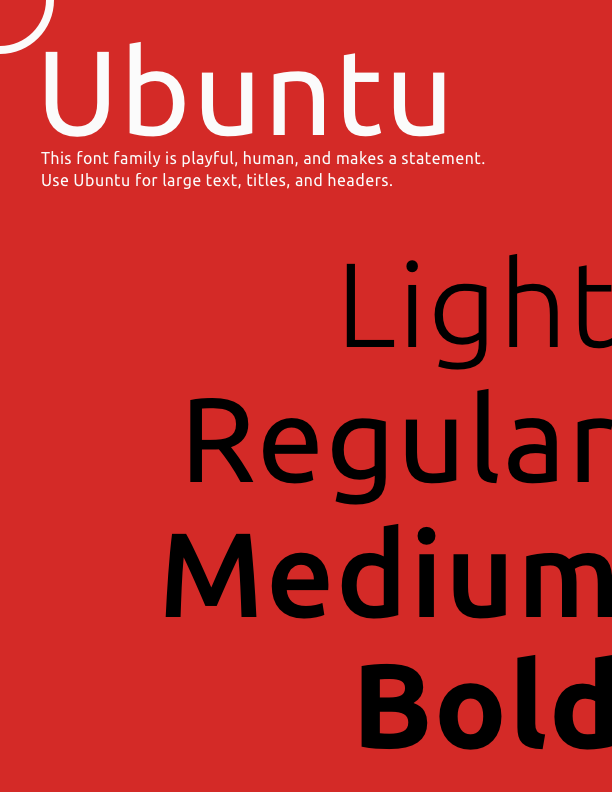
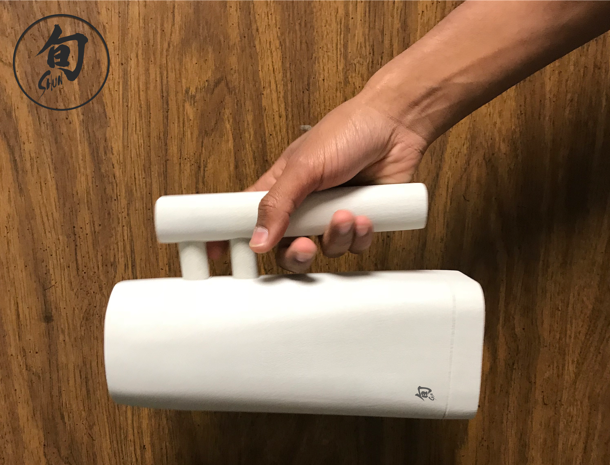
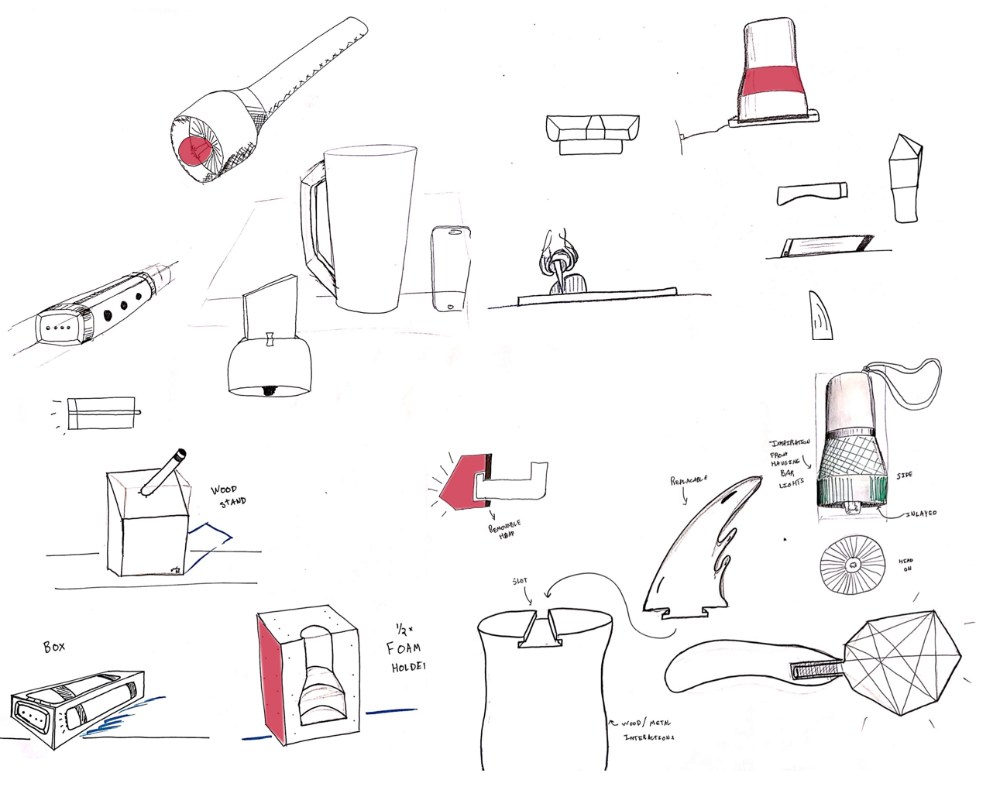

Computer Music XPs
Working with Ge Wang to create interactive, audio-visual experiences that speak to you.


stanFORD Mobility Project
Working with Dr. Barbara Karanian and the Ford Innovaiton Center to research and design for the future of multimodal transportation in cities.


Bose Design Challenge
An Education & Sound makeathon held at Stanford CCRMA - First Place


Brand Guidelines
Giving a fresh look to the largest entrepreneurship group on Stanford's campus (used by over 80 officers)


Shun-Inspired Flashlight
Creating a flashlight inspired by the brand of the over 100 year-old Japanese Chef Knife company, Shun.


Stanford LED Fountain
Recreating the joy of jumping in a fountain, in a drought.


The Piqo Wallets
An exploration into minimalist wallets.